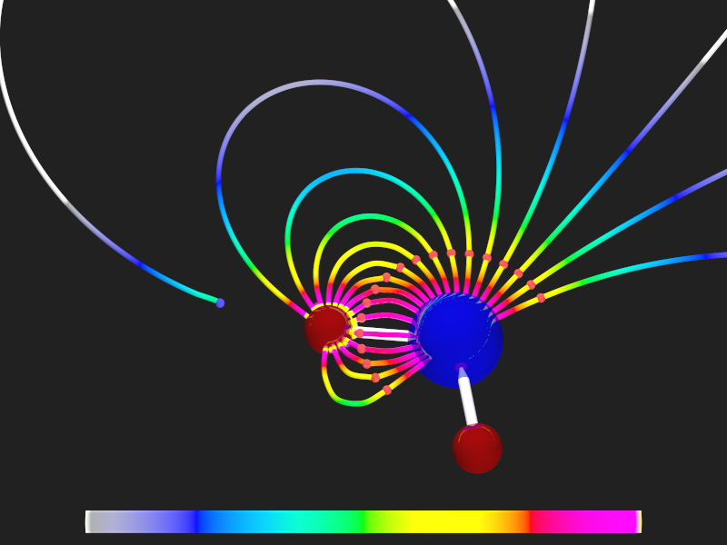

TABLE OF CONTENTS
ScPovPlot3D/MiPro41-.pov [ Scene files ]
[ Top ] [ Scene files ]
PURPOSE
This module is in introductory state, prepared for MiPro39/2016 conference. It contains macros for representation of vector field in form of set of vectors symbolised by various shapes and color coding systems. Direction and strength of vector at given space point can be visualised in different ways. While direction of the vector can be shown by main axis of some figure, for example cone or cylinder, strength and turn can be represented by length or color or volume or so on. It depends mainly on the goal of visualisation. I think, that representation of vectors in single plane is most informative by now. Besides that we need superimposition of source objects, as coils, charges, permanent magnet poles or even oceanic bed if one takes into account visualisation of oceanic currents.

Fig.[VectorFld]. Visualization of vector field
VERSION
3.3.0.0, tested on PovRay 3.7.
AUTHOR
Janusz Opi쓰 Ph.D.
jmo{at}agh.edu.pl, janusz.opila{at}gmail.com
Dept. of Applied Informatics,
https://www.facebook.com/KatedraInformatykiStosowanejWZAGH/
http://kis.zarz.agh.edu.pl/
AGH University of Science & Technology, Cracow, Poland http://www.zarz.agh.edu.pl/English/index.asp
Maintained by Janusz Opi쓰 Ph.D.
Homepage: http://scpovplot3d.sourceforge.net
COPYRIGHT
GNU GPL v.3 License (c) 2012-now by Janusz Opi쓰 Ph.D. AGH University of Science and Technology